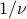
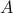
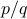

Monsieur Fourier and his scandal
Prof. Osgood opened the class today began with a great quote: ‘‘Wednesdays are always tough for me since I play in a band on Tuesday nights.’’ It turns out he plays the trombone, which he claims is the most romantic instrument in the world. As a horn player, I politely disagree. But that's beyond the point; we're here to talk about fourier series today.
At the end of last class we started talking about sines and cosines as the ‘model’ periodic functions that we all know and love. Now by this point we all were a bit tired of reviewing this silly material – this is a grad course after all – but as Prof. Osgood said, we've got to start somewhere, and it's really worth getting the basics ‘‘in your gut’’.
So we put our guts aside and started talking about how to modify and play with sines and cosines.
Tweaking Sines and Cosines
One of the first things we can do is to tweak the base period of the function to be  (unity) rather than . This turns out to be pretty convenient and makes things pretty conceptually clear. If we do this, our friends become and , and our picture of the unit circle is as follows:
(unity) rather than . This turns out to be pretty convenient and makes things pretty conceptually clear. If we do this, our friends become and , and our picture of the unit circle is as follows:
In particular, a revolution of the unit circle is now , and as  increases from zero to one, it traces out the unit circle one time counterclockwise. Notice there is one revolution per second, so the frequency is one. (The period is also one.)
increases from zero to one, it traces out the unit circle one time counterclockwise. Notice there is one revolution per second, so the frequency is one. (The period is also one.)
Again, of course we all know this material…there's nothing new here, but we need to review it to ground ourselves!
Frequency
A natural generalization is to tweak the frequency  by using
by using  and . We interpret these functions by saying that you go times around the circle in one second (after all, that's the definition of frequency). So for instance, if the frequency is , you go around the circle three times in a second; if it's , you go halfway around a circle in a second, et cetera.
and . We interpret these functions by saying that you go times around the circle in one second (after all, that's the definition of frequency). So for instance, if the frequency is , you go around the circle three times in a second; if it's , you go halfway around a circle in a second, et cetera.
If we make this modification, the period is becomes , because it takes  seconds to complete one revolution. Notice that this yet another example of a reciprocal relationship – if the frequency goes up, the period goes down, and vice versa.
We also made a comment about negative frequencies . Thankfully, in this going-around-the-unit-circle picture, it's pretty easy to interpret these functions – you just go around the circles clockwise rather than counterclockwise. No need to debate philosophical questions!
Phase
Another natural question about going around these circles is where to start on the circle when  . The answer is given by the phase
. The answer is given by the phase  , pronounced ‘‘phi.’’ When we include the phase, the form of the functions becomes and . As increases from 0 to 1, you go around the unit circle times, but starting from an angle of . We call this a ‘‘phase shift.’’
, pronounced ‘‘phi.’’ When we include the phase, the form of the functions becomes and . As increases from 0 to 1, you go around the unit circle times, but starting from an angle of . We call this a ‘‘phase shift.’’
Notice that sines and cosines are really just phase-shifted versions of each other; they're offset by a quarter of a cycle ( radians).
Amplitude
The final way we can tweak sinusoids is by adjusting their amplitude . In our picture of going around circles, the amplitude scales the radius of the circle that we're going around. Our final expression for the most general periodically varying sinusoid function is .
So to summarize:
The frequency
tells you how many times around the circle you go in one second;The phase
tells you what angle you start off at when ;The amplitude tells you the size of the circle or how ‘‘strong’’ your disturbace is.
These three parameters capture any change that you can do to a sinusoid, and they're all independent of each other.
Summing up sinusoids
The way we'll use these tweaked sinusoids is by adding them up in a sum. The main idea behind Fourier synthesis is that even though individual sinusoids behave like simple functions, when combine multiple sinusoides, each with their own frequencies, phases, and amplitudes, we can end up with richer behavior.
We then went through a simple physical example of why you might want to add up a number of terms, again using the example of a stadium wave. Say Mary is a spectator in the crowd, and we want to model the movement of her arms as she's subjected to the whims of the crowd. Any particular wave might be well modeled by a single sinusoid , but in reality, she is likely experiencing multiple waves at the same time. If that's the case, it's reasonable to guess that the total displacement or disturbance can be modeled by a sum, which we can write as
where each term in the sum has its own set of coefficients and .
We'll be spending a while talking about combinations of sinusoids, so hopefully this is enough motivation to justify why we ought to care about these sorts of sums.
Fourier's scandal
Now we moved on to Fourier's bold claim about such sums:
Any periodic function can be represented by a sum of sinusoids; that is, given some (known) periodic  , we can always express as
, we can always express as
where the and are unknown parameters that we have to find.
As Prof. Osgood puts it, ‘‘Quelle horreur! Mon dieu! Oh là là! What a scandal!’’ To be honest, I don't know if his story was a true historical fact or a mere apocryphal tale, but the message is pretty clear: the claim is pretty bold and pithy. There's no reason to believe why every periodic function should be expressible as a sum of this form.
A few comments:
It's not clear yet what we mean by ‘‘any periodic function.’’ As I remember from Math 61CM, there are different classes of functions. Some are nicer than others. There are smooth functions (which can be differentiated as many times as you want); there are continuous functions (which are not necessarily differentiable); there are discontinuous functions, and there are even more poorly behaved things which I don't even think count as functions. Maybe he means ‘‘any sufficiently non-pathological periodic function.’’ But I'm guessing we'll be more precise about this later.
There's a catch, since we haven't shown yet that the sum of two periodic functions is necessarily periodic! I think the condition is that the ratio between the two periods has to be rational number such as ; if that's the case, when one of the functions undergoes revolutions and the other one
 revolutions, then they ‘line up’ again.
revolutions, then they ‘line up’ again.For simplicity in our upcoming derivation, we will assume that
has a period of 1. This is not too hard to do; we just have to rescale the time coordinate by . (Scaling the period to for now makes the math easier.)As a consequence of the unit period, all the frequencies must be integers. In the homework, we'll think more about why the frequencies have to be integers and can't be arbitrary. (I think the argument is that only integer-frequency-sinusoids have a period of 1, and if we want the final sum to have a period of 1, we need to ensure that each individual term has a period of 1 as well.)
If we make the simplification of rescaling to so that has period 1, then our formula can be written more simply as
Now, the frequencies are fixed to be positive integers less than some maximum frequency  ; only the amplitudes and phases are unknown. Each of the individual terms is called a harmonic, in analogy to music, and the frequency of each harmonic is an integer multiple of the base frequency 1.
; only the amplitudes and phases are unknown. Each of the individual terms is called a harmonic, in analogy to music, and the frequency of each harmonic is an integer multiple of the base frequency 1.
There's one final degree of freedom we can introduce into the problem: we can allow a global vertical shift of , because a constant term won't affect the periodicity of . (Electrical Engineers like to call the constant term the ‘‘DC component’’)